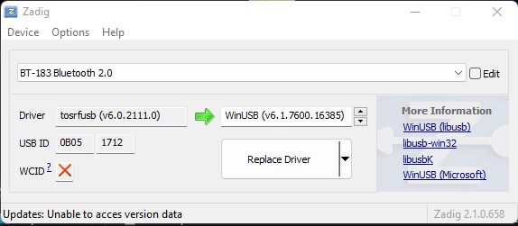

Wraz z pojawieniem się kilka lat temu w polsce telewizji cyfrowej, popularne stały się rozwiazania takie jak tunery DVB-T podłączane do komputera za pomocą interfacu USB. W urzadzeniach tych potencjał dostrzegli radioamataorzy, którzy zaczeli używać te urzadzenia jako skanery czestotliwosci.
Dekodery DVB-T jako SDRAby dekoder zadziałał jako skaner, musi być wyposażony w chip od firmy Realtek. Należy wtedy zainstalować odpowiednie oprogramowanie np. SDR Sharp lub HD SDR i dokoanć podmiany sterownika w systemie Windows, za pomocą pokazanego poniżej programu.
 Pinout transmiteraNastępnie po podmianie sterownika, można uruchomić własciwy program skanera częstotliwosci i wybrać z listy nasze urzadzenie z którego bedziemy monitorować sygnał. Ja korzystam, z SDRsharp.
wybrane urządzenieKrokiem kolejnym jest podpięcie antenki, która odbierze sygnał z eteru który chcemy analizować. Do zastosowań domowych, wystarczy taka dołączona do dekodera, gdy chcemy czegoś większego, wystarczy wyposażyć antenę w odpowiednie złącze i podłączyć do naszego SDR.
Płytka Arduino nanoPo podłaczeniu anteny, układ powinien odbierać sygnał i na ekranie powinny być widoczne tak zwane wodospady czyli widmo naszego sygnału w postacji graficznej. Układ daje nam możiwośc odbioru na 2,5 GHz
WodospadyUkład umożliwia również demodulacje sygnału i obsługuje najbardziej popularne typy modulacji takie jak AM FM oraz wstęgi, dzięki czemu możemy słuchać np. stacji radiowych lub też komunikacji lotniczej. Takie małe urzadzenie daje nam ogromne możliwosci.
Odsłuch radiaUrzadzenie to mimo że nie jest profesjonalene to daje duże możliwosci które pewnoscią doceni je osoba pasjonująca się elektroniką a szczególnie wysokimi czestotliwosciami. Taki skaner pozwoli nam zobaczyć czy np. nasz pilot od bramy działa, czy też sprawdzić czy nasz nadajnik o którym pisąłem tutaj działa poprawnie i nie generuje tak zwanych harmonicznych.